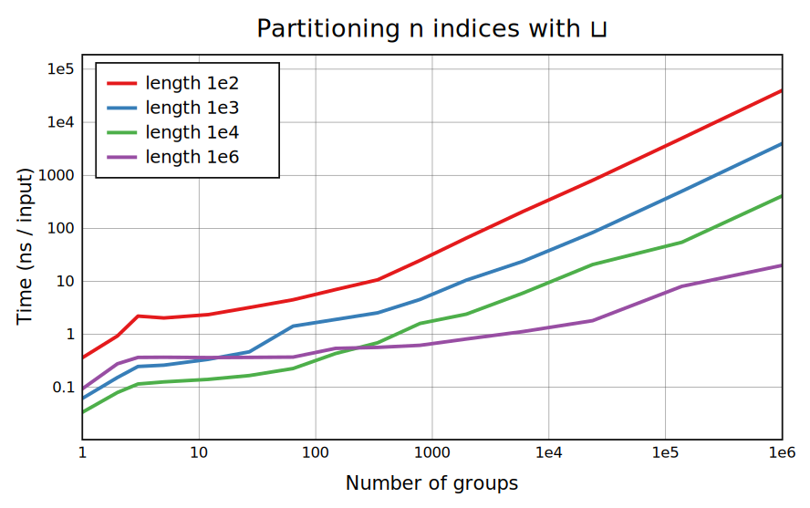
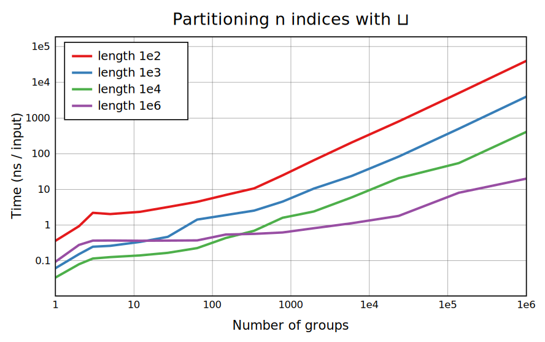

The first pair of benchmarks shows the case of a uniformly random 𕨠with a varying range. In the middle the generic algorithm is used and the main cost is that of moving each argument value to the required output group. At the right, the cost of allocating arrays for the groups begins to matter, and eventually there are many empty groups that don't count in the denominator. They're all copies of the same empty array but making so many copies begins to get expensive. At the left, if the range is 1 the result is simply ⋈𝕩, and if the range is 2, Replicate is used to get both groups.
This pair is the same except that 𕨠is sorted, so that the groups are slices from 𝕩. Copying such slices is much faster than moving elements one at a time. Between 1000 and 1e4 groups, Group switches over from a sorting-specific method on the right to a generic chunked one on the left; both use the same data copying but the surrounding code is different. For Group (not Group Indices), CBQN could instead take virtual slices to avoid copying, but memory leaks would be a possible concern since one small result group could keep all the data alive.
This benchmark adds ¯1s to 𕨠to drop elements; when an initial statistics pass finds a lot of these, Replicate is used to filter them out quickly. For length 1e2 there's only one output group, so at density 1 the ⋈𕩠case applies.
 
